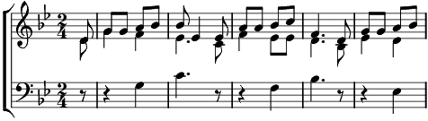

Refrain:
Enfant, enfant d'Israël, en ce jour de Noël
Que ton regard se pose sur la terre ou le ciel,
Il faut croire, il faut croire à Noël.
1. Que les fusils se taisent et répondent à l'appel
De cette parenthèse, de cette parenthèse
Qui s'appelle Noël.
Refrain
2. Aux plumes de lumière un oiseau éternel,
Colombe pour la terre, colombe pour la terre,
Un oiseau de Noël.
Refrain